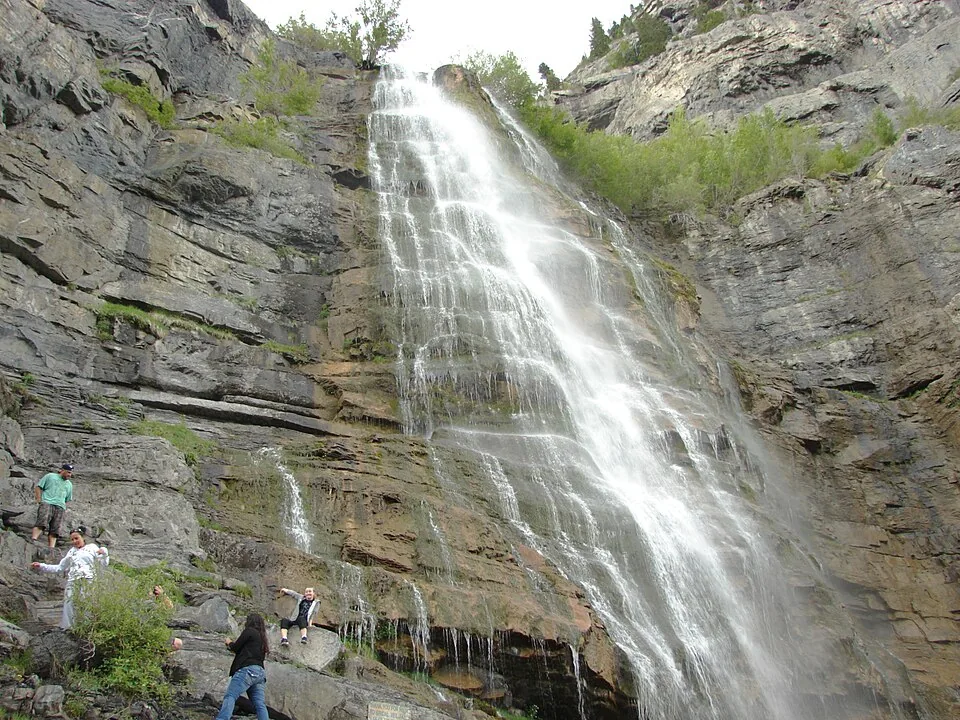

SOURCE-REVIEWED · Provo Canyon
Bridal Veil Falls
Make a waterfall the reason for a first walk outdoors. Bridal Veil Falls pairs Provo Canyon scenery with paved riverside trails and nearby picnic areas. This guide covers the paved viewing approach only, not a climb beside or above the falls. Confirm the available pedestrian route and parking with Utah County before choosing this outing; construction access remains unverified.

Historical photo from 2015; it does not show current construction or access conditions. The visible visitors are not a recommendation to approach or climb the waterfall.
Photo: An Errant Knight · CC BY-SA 4.0 · WebP conversion · Photo credits- Location
- Provo Canyon
- Experience
- First Steps
- Landscape
- Canyons, Lakes & waterways
- Planning seasons
- To be verified
- Distance
- Not published in reviewed official sources
- Elevation gain
- Cumulative gain not published in reviewed official sources
- Approximate duration
- Not confirmed by official source
- Route type
- Return along the confirmed paved approach; exact route variant depends on authorized access.
- Trail surface
- Paved riverside trails (Utah County); current usable approach, grades, and accessibility require confirmation.
- Terrain
- Maintained path
- Estimated difficulty
- First Steps editorial selection for the paved viewing approach; official route-specific difficulty not published in reviewed sources
- Trailhead
- Bridal Veil Falls main parking area, Provo Canyon off US Highway 189; confirm the currently authorized parking and pedestrian approach with Utah County.
Why this hike is worthwhile
Make a waterfall the reason for a first walk outdoors. Bridal Veil Falls pairs Provo Canyon scenery with paved riverside trails and nearby picnic areas. This guide covers the paved viewing approach only, not a climb beside or above the falls. Confirm the available pedestrian route and parking with Utah County before choosing this outing; construction access remains unverified.
Know Before You Go
Preparation
Confirm parking, construction restrictions, and the available paved route with Utah County before leaving. Bring water, shoes with grip, and layers. Stay on the authorized viewing approach and respect barriers; this guide excludes climbing beside or above the waterfall.
Seasonal hazards
Utah State Parks warns that snow can limit winter access. As conservative planning precautions, watch for wet or icy footing, keep children close beside the river, and avoid climbing wet rocks. Respect construction barriers and turn back if the authorized route is unclear.
Seasons and weather
Utah State Parks describes year-round trail access with possible winter limitations from snow. No beginner planning-season filters are assigned until the available route and seasonal demands are confirmed; year-round information is not a current opening report.
Check the canyon forecast before leaving. Snow, ice, cold, and wet pavement can change a short walk substantially. Choose conditions that suit the whole group and turn back when footing is unsuitable.
Fees
The county says no reservation is needed to enjoy the falls. The reviewed pages do not establish parking or admission fees; confirm any current charges with Utah County. No reservation requirement does not mean free parking.
Access and restrictions
Utah County manages day-to-day operations. Its park listing includes restrooms, picnic areas, and pets on leash, but does not confirm their current availability. Ask Utah County Public Works at 801-851-8600 about construction, open parking, authorized pedestrian access, and facilities before visiting.
Official information and verification
- Utah County: Bridal Veil Falls paved riverside trails, amenities, leash rule, and reservations
- Utah State Parks: Bridal Veil Falls management, parking-area approach, and winter limitations
Last source review: 2026-10-21
Official county and state pages are now accessible and have been reviewed. They support the paved riverside setting, listed park amenities, leash requirement, county management, main-parking-area approach, and possible winter snow limitations. They do not publish an exact distance, cumulative elevation gain, walking time, or route-specific difficulty for this outing; those statistics remain unknown. Construction status, currently open parking, authorized pedestrian access, fees, and accessibility remain unconfirmed. Landscape and terrain tags describe the intended paved approach, not current access. Hazards beyond the published winter warning are conservative editorial planning guidance.
Build your trail confidence ↗